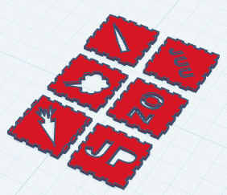

3D Projekts: Kubs uzņēmumam "Sparģelis"
Vienā no nozīmīgākajiem datorikas projektiem man un grupas biedriem bija uzdevums uzprojektēt un izprintēt 3D kubu dārzeņu un augļu pārdošanas uzņēmumam "Sparģelis". Šis kubs ir radīts kā speciāls aksesuārs un zīmola suvenīrs. Darbā izmantojām 3D modelēšanas programmatūru "Tinkercad" un pēc tam sagatavojām failu 3D printerim.

Procesa video dokumentācija
Papildus pašam dizainam, es izveidoju video, kurā apkopoju un dokumentēju pilnīgi visu darba procesu. Tajā var redzēt pāreju no pirmajām modelēšanas idejām ekrānā līdz pat gatavam fiziskam, izprintētam produktam.